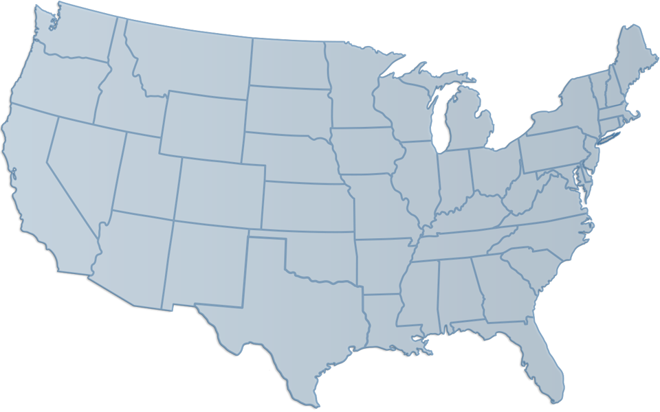

Bemutatkozás
 Medve Dániel Attila 22 éves gépész hallgató vagyok a Budapesti Műszaki és Gazdaságtudományi Egyetemen. 2018 nyarán kiutaztam az Egyesült Államokba, ahol 13 hónapot töltöttem el. Ez idő alatt volt alkalmam betekinteni az ottani kultúrába, nem csak külső szemlélőként, hanem részeseként is. Megismertem az ottani emberek mentalitását, szokásait, és rengeteg különleges helyre sikerült eljutnom az USA-n belül. Ezeket az élményeimet osztom meg ezen a webhelyen.